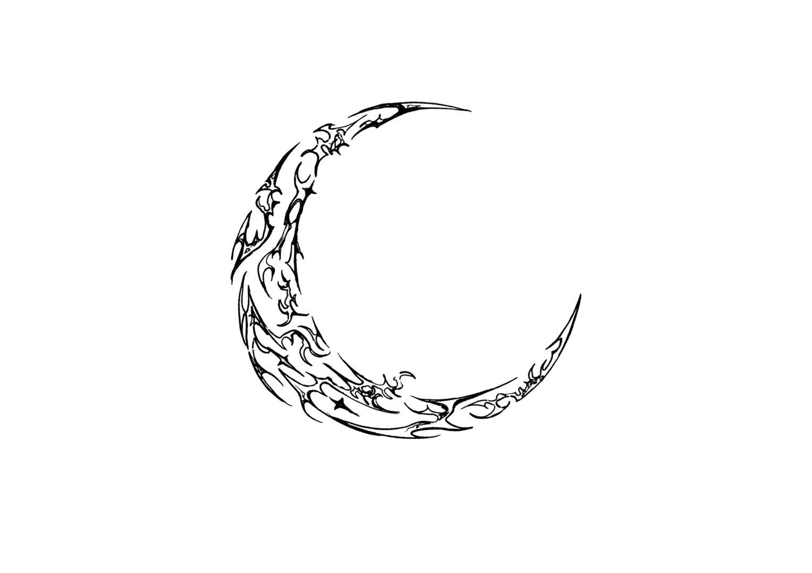
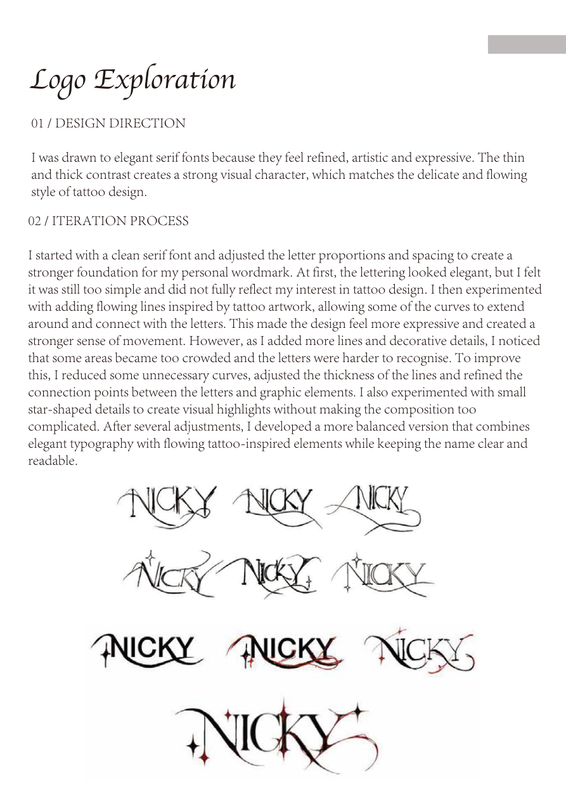
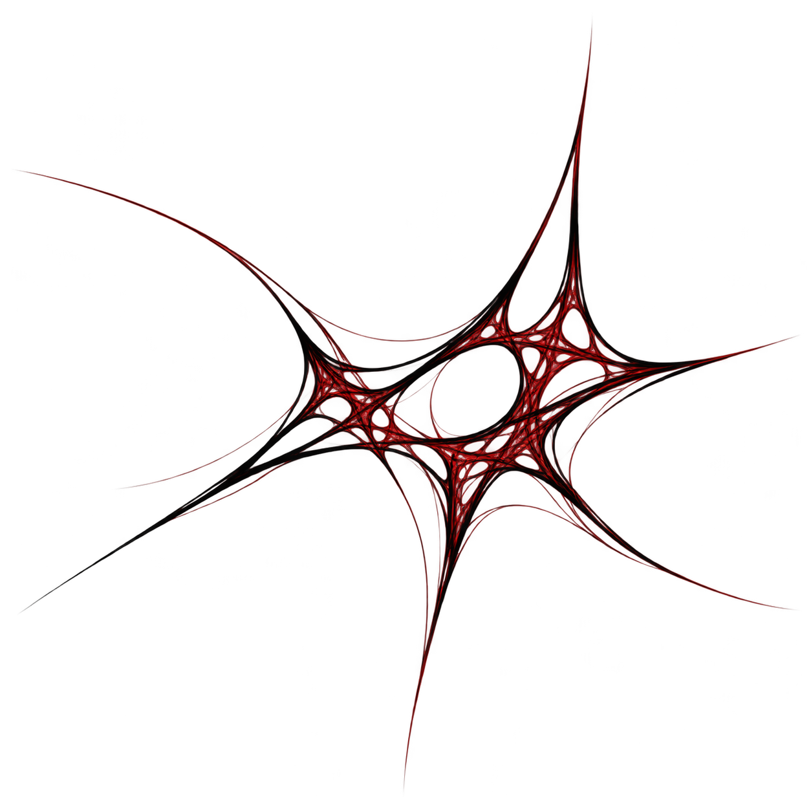
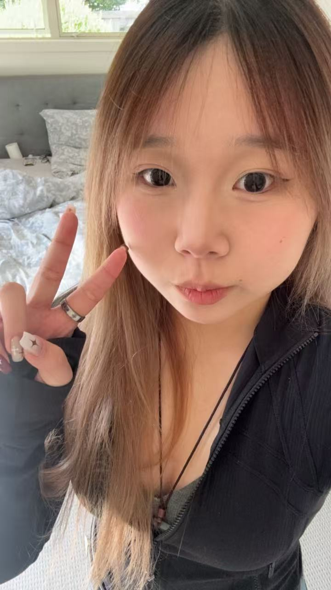

ARTWORK_001 / TATTOO ↗
IDENTITY_002 / PROCESS ↗NICKYSTUDIO✳
A universe of tattoo-inspired art, visual identities & unexpected little experiments.
01 / SELECTED PROJECTS
Selected
Projects.
A wider archive of original art, branding, product concepts, board game design and interactive apps. Open any project for its complete story.

✦ Independent and course-based projects are clearly identified. Huffer Time belongs to DES224; MOVE is a DES232 group project. Neither is presented as new DES221 practice work.
02 / CURRENT PRACTICE · DES221
My Personal
Case Study.
Building NICKY STUDIO — turning tattoo-inspired lettering, flowing lines and original visual experiments into a flexible identity that represents my work today.
03 / ABOUT THE HUMAN
Hi, I'm Nicky.

100% HUMAN · NOT AI-RETOUCHEDNot one medium.
Not one mood.
Just making things feel alive.
I'm a multidisciplinary designer based in Auckland, New Zealand. My work moves between visual identity, graphic design and original tattoo art. I love expressive details, flowing lines and surprising ideas — making things that feel personal, intentional and full of character.
Let's make
something strange
& beautiful.
Have an idea, a question, or just want to say hi?
ningnicky99@gmail.com ↗